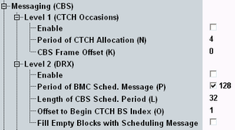
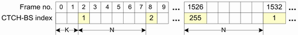

This section configures parameters of the "Messaging (CBS)", level 1 and level 2.

CTCH used by CBS is mapped on one FACH/S-CCPCH. On the S-CCPCH, the TTIs allocated for CTCH transmission are periodically repeated with period N. The first CTCH allocated TTI is positioned with an offset K. Figure below demonstrates the CTCH allocation example.

Enables CBS generally.
Remote command:Specifies the CTCH allocation period used for the transmission of cell broadcast (CB) message or scheduling message. The allocation of CTCH is broadcast via BCCH (SIB5, IE: CBS DRX level 1 information). See also: 3GPP TS 25.925.
Remote command:A scheduling message informs the UE which CB messages will be sent in the next DRX schedule period (P). The UE reads then the CB message of interest in DRX mode. The following parameters configure DRX for CBS scheduling.
Enables discontinuous reception (DRX) for the CBS scheduling.
Remote command:Sets the period of scheduling message that is transmitted by broadcast/multicast control (BMC). The period is defined in the units of CTCH occasions.
Remote command:Specifies the length of the DRX used for the specific CB message. Define value matching with the position of the particular CB message within the CBS scheduling period.
Remote command:Configures an offset within scheduling period P for the transmission of a scheduling message.
Remote command: